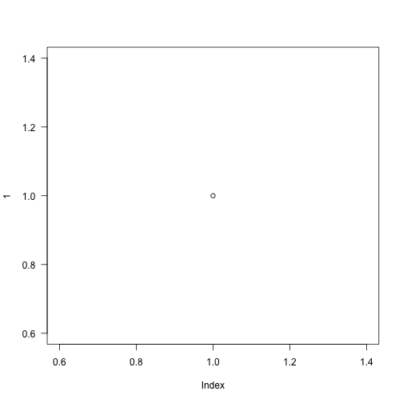

Outline
- Introduction
- R graphics basis
- Composition and multipanel plotting
- Graphics automation and export
- Ressources
- Exercises
Kévin Cazelles and Nicolas Casajus
Université du Québec à Rimouski
plot() functionplot(1, las = 1)

The function/object par()
print(vec1)
## Error in print(vec1): objet 'vec1' introuvable
points(), lines(), rect(), polygon() and box()showtext package